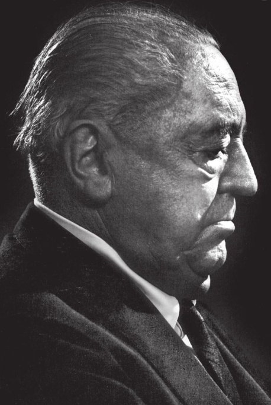

Ludwig Mies van der Rohe (March 27, 1886 – August 17, 1969) was one of the most influential architects of the 20th century. He relied on the most enduring architectural style of this era: modernism Famous. Mies was born in Aachen, Germany. His career began in the famous Peter Behrens studio. Here, Mies and two other modernist fighters: Walter Gropius and Le Corbus Sie worked together. In the past century, Mies' minimalist style has become very popular, and his famous motto "less is more " is still widely circulated, even people who don't know him are using this phrase.
Mies Van Der Rohe
The Pioneers of Modernist Architecture.

Less is more
Boyhood and Bauhaus
Ludwig Mies van der Rohe (1886-1969), a German-born architect and educator, is widely acknowledged as one of the 20th century’s greatest architects. By emphasizing open space and revealing the industrial materials used in construction, he helped define modern architecture. Born in Aachen, Germany, Mies spent the first half of his career in his native country. His early work was mainly residential, and he received his first independent commission, the Riehl House, when he was only 20 years old. Mies quickly became a leading figure in the avant-garde life of Berlin and was widely respected in Europe for his innovative structures, including the Barcelona Pavilion. In 1930, he was named director of the Bauhaus, the renowned German school of experimental art and design, which he led until 1933 when he closed the school under pressure from the Nazi Regime.
In 1936, when Earl Reed resigned as director of the Department of Architecture at Armour Institute, the school engaged Chicago’s architectural leaders in the search for a new director. During these early years, Mies held classes in space provided by the Art Institute of Chicago. Mies’ second task was to expand the south side campus. In 1940, Armour Institute and Lewis Institute merged to form Illinois Institute of Technology. Armour Insitute’s original seven acres could not accommodate the combined schools’ needs, and Mies was encouraged to develop plans for a newly expanded 120-acre campus.
Less is more
Lasting legacy
Whether or not you agree with Mies’ assertation that less is more, his contribution to the modern urban landscape cannot be overlooked. Mies’ architecture has been described as being expressive of the industrial age in the same way that Gothic was expressive of the age of ecclesiasticism. In 1956, famed architect Eero Saarinen spoke at the dedication of Mies’ masterwork, S.R. Crown Hall, and lauded him as Chicago’s third great artist, placing Mies in the prestigious lineage of Louis Sullivan and Frank Lloyd Wright.
“Great architecture is both universal and individual,” Saarinen said at the dedication, “The universality comes because there is an architecture expressive of its time. But the individuality comes as the expression of one man’s unique combination of faith and honesty and devotion and belief in architecture.” After 20 years as the director of architecture at IIT, Mies resigned in 1958 at the age of 72. In 1959, the Royal Institute of British Architects awarded Mies its Gold Medal and the following year he received the AIA Gold Medal, the highest award given by the American Association of Architects. President Lyndon Johnson presented Mies with the Presidential Medal of Freedom in 1963.
It was in 1966 when Mies began suffering from cancer of the esophagus. He died three years later in his adoptive hometown, Chicago. Family surrounded him at his deathbed and, at a memorial service in Crown Hall, the general public stood alongside the leading names in architecture to mourn the architect. Our built environment is meant to be lived in. Mies’ buildings, beyond merely affecting our lives, endow them with greater significance and beauty. His buildings radiate the confidence, rationality, and elegance of their creator and, free of ornamentation and excess, confess the essential elements of our lives. In our time, where there is no limit to excess, Mies’ reductionist approach is as pertinent as ever. As we reduce the distractions and focus on the essential elements of our environment and ourselves, we find they are great, intricate, and beautiful. Less is more.
Architecture starts when you carefully put two bricks together. There it begins.
Learn more about Mies Van Der Rohe
Gallery

Farnsworth House (1951)
Plano, Illinois

The Barcelona Pavilion (1929)
Barcelona, Spain

Chicago Federal Complex
Chicago, Illinois

Crown Hall (1956)
Chicago, Illinois

Seagram Building (1958)
Plano, Illinois

Lafayette Park (1959)
new york